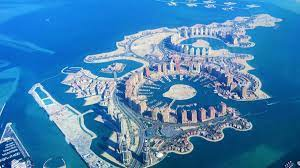

Qatar

Catar, ou Qatar, é um país árabe, conhecido oficialmente como um emirado do Oriente Médio, ocupando a pequena Península do Catar na costa nordeste da Península Arábica. Faz fronteira com a Arábia Saudita ao sul, e o Golfo Pérsico envolve o resto do país. Um estreito do Golfo Pérsico separa o Catar da nação insular vizinha, o Bahrein.
O Catar é um emirado absolutista e hereditário comandado pela Casa de Thani desde meados do século XIX. As posições mais importantes no país são ocupadas por membros ou grupos próximos da família al-Thani. Em 1995, o xeque Hamad bin Khalifa Al Thani tornou-se emir após depor seu pai, Khalifa bin Hamad al Thani, em um golpe de Estado.
Foi um protetorado britânico até ganhar a independência em 1971. Desde então, tornou-se um dos estados mais ricos da região, devido às receitas oriundas do petróleo e do gás natural (possui a terceira maior reserva mundial de gás). Antes da descoberta do petróleo, sua economia era baseada principalmente para a extração de pérolas e comércio marítimo. Atualmente, lidera a lista dos países mais ricos do mundo pela revista Forbes e está classificado em 41º lugar (logo após Portugal) na lista das Nações Unidas de países com maior desenvolvimento humano (IDH), e em 3° no mundo árabe. A Freedom House considera o país "não livre". A Amnistia Internacional anota vários atropelos de direitos humanos. Desde a primeira Guerra do Golfo, tem sido um importante aliado militar dos Estados Unidos e atualmente abriga uma importante base militar na região.
Com uma população estimada em 2,8 milhões de habitantes, apenas 313 mil são nativos catarianos. Os demais são trabalhadores estrangeiros, especialmente de outras nações árabes (13%), Subcontinente indiano (Índia 24%, Nepal 16%, Bangladesh 5%, Paquistão 4%, Sri Lanka 2%), Sudeste Asiático (Filipinas 11%) e demais países (7%). Também é um dos poucos países do mundo em que seus cidadãos não pagam impostos.
Historia
Pré-história e domínio islâmico
A habitação humana do Catar remonta a 50 mil anos. Assentamentos e ferramentas que remontam à Idade da Pedra foram descobertos na península. Artefatos da Mesopotâmia originários do período de al-Ubaid (ca. 6 500-3 800 a.C.) foram descobertos em assentamentos costeiros abandonados. O Catar era descrito como um famoso centro de criação de cavalos e camelos durante o período do Califado Omíada. No século VIII, a região começou a ser beneficiada por sua posição comercial estratégica no Golfo Pérsico e tornar-se-ia um centro de negociação de pérolas. O desenvolvimento substancial na indústria de pérolas em torno da península do Catar ocorreu durante a era do Califado Abássida. Navios viajando de Baçorá para Índia e China faziam escalas nos portos do Catar durante este período. Peças de porcelana chinesa, moedas da África Ocidental e artefatos de Tailândia foram descobertas no Catar. Grande parte da Arábia Oriental era controlada pelos usfuridas em 1253, mas o domínio da região foi conquistado pelo príncipe de Ormuz em 1320. As pérolas do Catar forneciam ao reino uma das suas principais fontes de renda. Em 1515, Manuel I de Portugal tornou o Reino de Ormuz um Estado vassalo. O Reino de Portugal passou a controlar uma parcela significativa da Arábia Oriental em 1521. Em 1550, os habitantes de al-Hasa se colocaram voluntariamente sob domínio do Império Otomano, preferindo-o em relação ao Império Português. Depois de ter mantido um presença militar insignificante na área, os otomanos foram expulsos pela tribo Bani Khalid em 1670.
Domínio otomano e britânico
Sob pressão militar e política do governador do otomano Midate Paxá, o governante tribal al-Thani submeteu-se ao domínio otomano em 1871. O governo otomano impôs medidas reformistas (Tanzimat) em matéria de impostos e de registro de terras para integrar plenamente estas áreas ao império. Apesar da desaprovação de tribos locais, al-Thani continuou apoiando o domínio otomano. No entanto, as relações catari-otomanas estagnaram e em 1882 ela sofreu novos retrocessos quando os otomanos se recusaram a ajudar al-Thani em sua expedição para Al Khor, então ocupado por Abu Dhabi. Além disso, os otomanos apoiavam Mohammed bin Abdul Waha, que tentou suplantar al-Thani como o caimacã do Catar em 1888. Isto conduziu al-Thani a se rebelar contra os otomanos, a quem ele acreditava que tentavam usurpar o controle do península. Ele renunciou ao cargo de caimacã e parou de pagar impostos ao império em agosto de 1892. O Império Otomano caiu em desordem depois de perder batalhas em diferentes frentes no teatro de operações do Oriente Médio da Primeira Guerra Mundial. O Catar também participou da Revolta Árabe contra os otomanos. A revolta foi bem sucedida e o domínio otomano no país diminuiu ainda mais. O Reino Unido e o Império Otomano reconheceram o xeique Abdulá ibne Jassim al-Thani e o direito de seus sucessores de governar sobre toda a Península do Catar. Os otomanos renunciaram a todos os seus direitos sobre a região e, após a eclosão da Primeira Guerra Mundial, al-Thani (que era pró-britânico) obrigou-os a abandonar Doha em 1915. Como resultado da divisão do Império Otomano, o Catar tornou-se um protetorado britânico em 3 de novembro de 1916. Nesse dia, o Reino Unido assinou um tratado com onde o xeique al-Thani concordava em não criar quaisquer relações com qualquer outra potência sem o consentimento prévio do governo britânico. Em troca, o Império Britânico garantiria a proteção do Qatar de toda a agressão por mar. Em 5 de maio de 1935, al-Thani assinou outro tratado com o governo britânico que concedeu a proteção Qatar contra ameaças internas e externas. As reservas de petróleo foram descobertas pela primeira vez em 1939. No entanto, a exploração foi adiada pela Segunda Guerra Mundial. A esfera de influência dos britânicos começou a diminuir após a Segunda Guerra Mundial, particularmente após a independência da Índia e do Paquistão, em 1947. Na década de 1950, o petróleo começou a substituir as pérolas e a pesca como a principal fonte de receita do Catar. Os lucros do petróleo começaram a financiar a expansão e a modernização da infraestrutura local. A pressão para uma retirada britânica dos emirados árabes no Golfo Pérsico aumentaram durante os anos 1950. Quando o Reino Unido anunciou oficialmente, em 1968, que em três anos deixaria de controlar politicamente o Golfo Pérsico, o Catar juntou-se ao Bahrein e sete outros Estados em uma federação. Disputas regionais, no entanto, rapidamente compeliram o país a declarar a independência da coalizão, que acabaria por evoluir para os Emirados Árabes Unidos.
Independência
Em 3 de setembro de 1971, o Catar conquistou oficialmente a sua independência do Reino Unido e se tornou um Estado soberano. O governo então decidiu voltar ao realizar o abastecimento de armas para os franceses; essa ligação seria reforçada ao longo do tempo e os franceses se tornariam seu maior fornecedor no novo milênio. Em 1972, o califa bin Hamad al-Thani tomou o poder em um golpe palaciano durante um período de discórdia na família governante. Em 1974, a Qatar Geral Petroleum Corporation assumiu o controle de todas as operações de petróleo no país e o Catar rapidamente cresceu em riqueza. O depósito de gás natural do Campo Norte, então a maior do mundo, foi descoberto por volta de 1976 e o país foi um dos primeiros a ter embarcações de gás natural liquefeito. Em 1991, o Catar desempenhou um papel significativo na Guerra do Golfo, particularmente durante a batalha de Khafji na qual os tanques do país prestaram apoio para unidades da Guarda Nacional da Arábia Saudita, que estava enfrentando o exército iraquiano. O Catar permitiu que tropas do Canadá, que eram parte da coalizão internacional, usassem o país como uma base aérea e também permitiu que forças aéreas dos Estados Unidos e da França operassem em seus territórios.